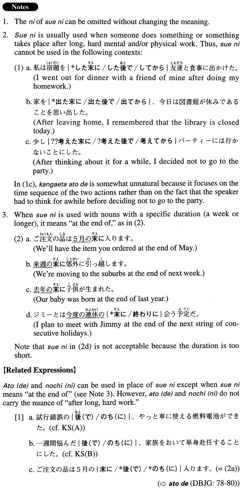

末（に） (A. 562)
- (ksa).
- さんざん迷った末に、友達の結婚祝いはコーヒーカップのセットを贈ることにした。
- After much hesitation, I decided to give my friends a set of coffee cups as a wedding present.
- (ksb).
- 試行錯誤の末(に)、やっと車に使える燃料電池ができた。
- After much trial and error, we finally made a fuel cell battery that can be used in cars.
- (a).
- 一週間悩んだ末(に)、家族をおいて単身赴任することにした。
- After considering it for a week, I decided to leave my family behind and transfer to my new job alone.
- (b).
- 両者は8時間にわたる交渉の末に、ついに合意に達した。
- After eight hours of negotiation, both parties finally came to an agreement.
- (c).
- 5時間を超える熱戦の末、タイガースが勝った。
- After a close game lasting more than five hours, the Tigers won.
- (d).
- M銀行とU銀行の合併交渉は１年以上も難航した末、やっと成立した。
- After more than a year of difficult merger negotiations, M Bank and U Bank finally came to an agreement.
- (e).
- 下書きを20枚近く失敗した末に、やっとなんとか気に入った絵ができた。
- After almost twenty bad sketches, I finally managed to draw one I liked.
- (f).
- 再就職は、苦労した末、過去のコンピュータ経験を評価してくれたIT関係の会社に決まりました。
- After much trouble looking for a new job, I found one with an IT-related company that valued my previous computer experience.
- (g).
- 男は走って逃げ、最後には暴れ回って抵抗した末に逮捕された。
- The man tried to run away and, in the end, he was arrested after resisting violently.
- (h).
- この案は、各国の意見が衝突した末の「妥協の産物」だった。
- This plan was a product of compromise, reached after working through a clash of opinions between the countries.
